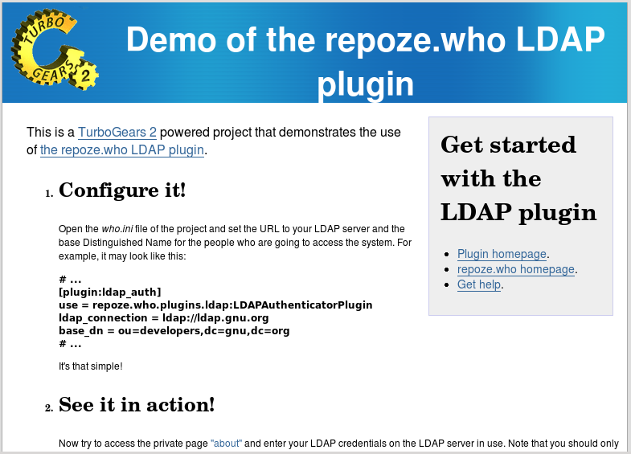
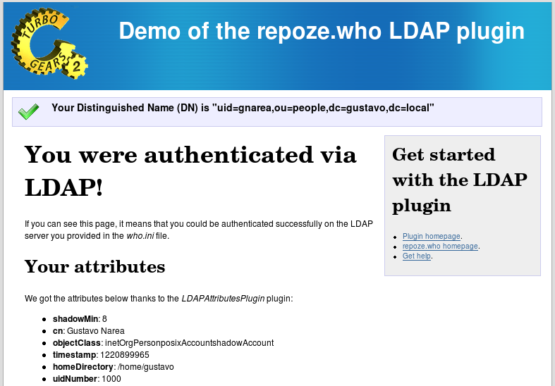

repoze.who.plugins.ldap ships with a working TurboGears 2 project powered by this repoze.who plugin. It enables you to give it a try with your own LDAP server.
This demo is included the the demo/ subfolder of the project. If you installed the plugin directly, you may get its source from the PYPI.
You may also get the latest source code from its Bazaar branch:
bzr branch lp:repoze.who.plugins.ldap
The project is powered by TurboGears 2, so you should install it first.
Once you’ve installed TurboGears, you will be ready to install the demo:
cd demo
python setup.py develop
Open the who.ini file and set your LDAP URL and your base Distinguished Name, both found in the [plugin:ldap_auth] section.
For example,
[plugin:ldap_auth]
use = repoze.who.plugins.ldap:LDAPAuthenticatorPlugin
ldap_connection = ldap://localhost
base_dn = ou=people,dc=localhost
You can run the application from the demo/ folder:
paster serve development.ini
Then go to http://localhost:8080/ to use it!
Now go to the “private” section http://localhost:8080/about and login with your credentials in the LDAP server you’re using.
If you entered them correctly, you’ll access the page!
This demo configures repoze.who via an INI file (who.ini), which is loaded in demo/ldapauth/config/middleware.py.
Then the login form is triggered when you try to access a private page as anonymous, as in the about action controller (found at ldapauth.controllers.root:RootController):
# ...
def about(self):
if request.environ.get('repoze.who.identity') == None:
raise HTTPUnauthorized()
# ...
Once the user has been authenticated, you’ll be able to access her DN with the code below, for example:
from pylons import request
dn = request.environ['repoze.who.identity']['repoze.who.userid']
This demo also features the LDAPAttributesPlugin metadata provider, which is used in the private page to show all the available LDAP attributes for your entry in the LDAP server you are using. Such metadata is loaded in:
request.environ['repoze.who.identity']